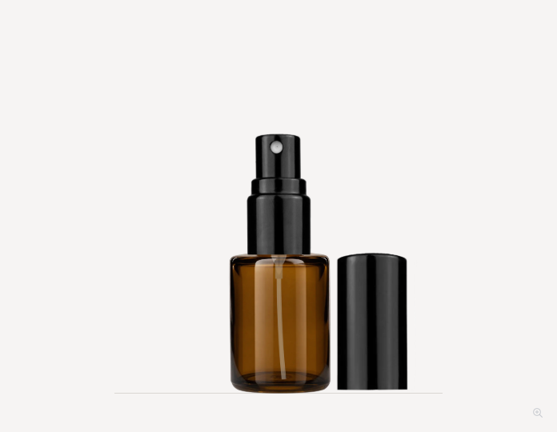
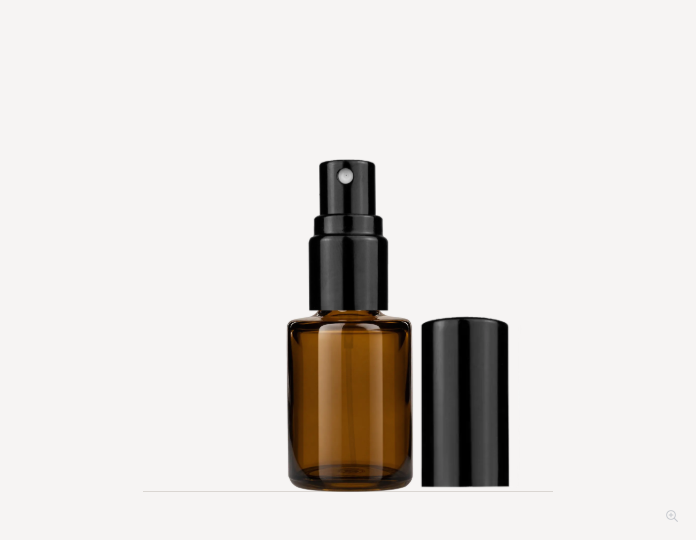
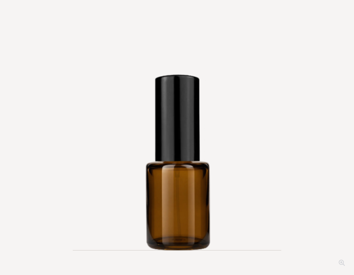
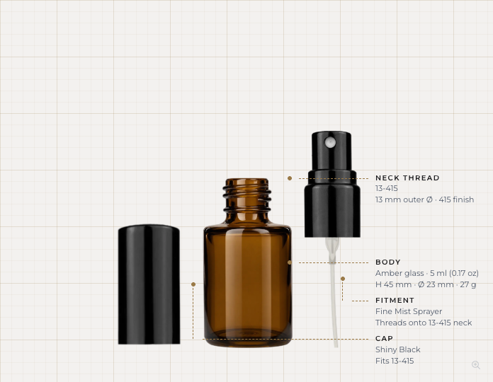
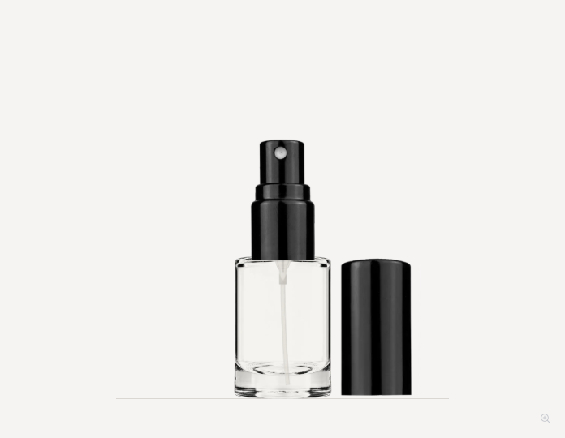
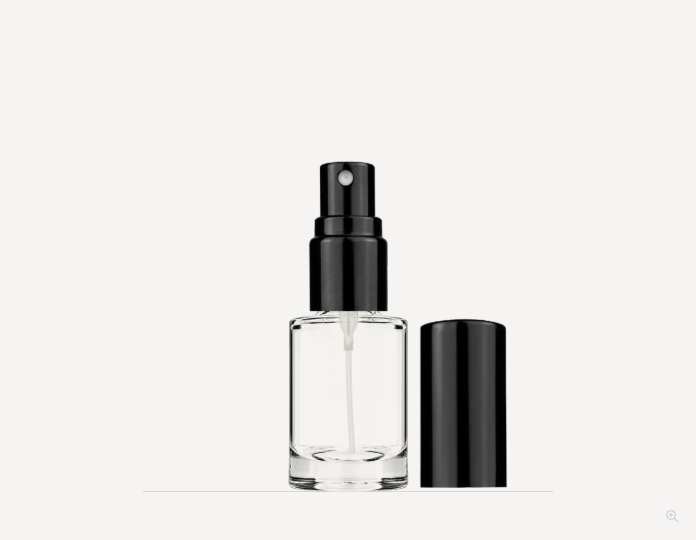
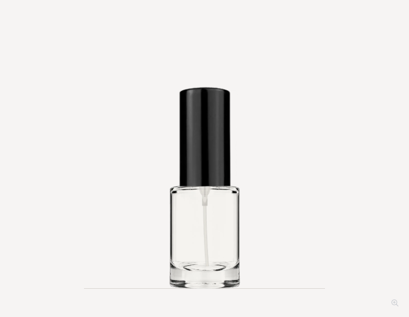
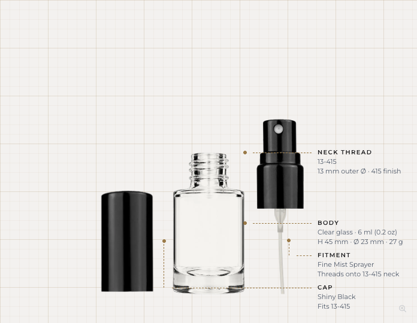

Local review only. Original body shape and scale preserved. Amber tube treatment approved; closed overcaps meet the shoulder. All 15 sprayer finishes checked in three views. Both builder entries use the same trim.







